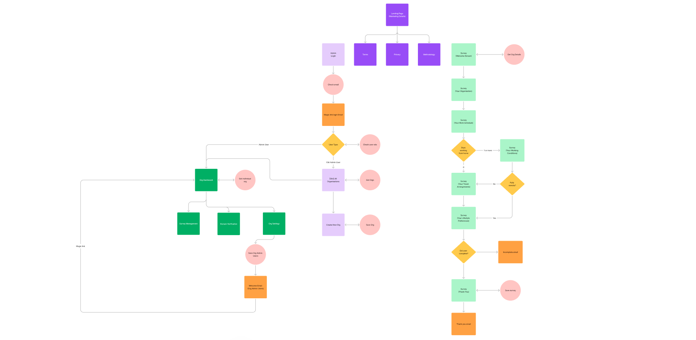

Scope 3 Emissions
As an organisation, I want to easily be able to gather data on employee scope 3 emissions and track the progress of changes over time.
Company
Giki Social Enterprise Ltd.
Product
Giki ES3
Platform
Web
User Feedback
“This is great - fast, easy, good on mobile and desktop - well done”
"Completed the survey – thought it was quick and easy to complete, nothing that should confuse anyone when filling it in."

Discovery
By interviewing the sustainability teams of various organizations, we identified the need for a tool that would allow organizations to easily gather data related to employee scope 3 emissions and suggest areas for improvement that the user could track over time. Once we had the different user personas and requirements gathered we were able to determine the platform necessary for achieving our goals:
1. Admin tool - A web application designed for generating, managing and reviewing survey applications for admin users (used primarily on desktop browsers by sustainability teams)
2. Survey tool - A web survey designed for employees of all departments and positions (used on both mobile and desktop browsers)
Approach
The next step was to review existing admin tools and surveys to gain an understanding of market trends and best practices. I then fleshed out the user flow based on the different types of users:
1. Giki Admins (Users who have access to all organizations)
2. Org Admins (Users who have access to only their organization)
3. Employees (Users who will only use the survey and not the admin site)
After determining the high and low priority areas of functionality for the MVP, we were able to test various wireframe solutions and mock up a UI prototype in order to test the different use cases. Once we were happy with them, we developed the MVP and carried out a soft launch with smaller companies in order to develop case studies.
Results
Giki ES3 has proved to be an early success, allowing us to sign a contract with a business with over 50,000 employees even before we had completed the development phase. It has also proved benefitial in helping to renew contracts with users of other Giki products.